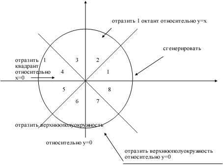
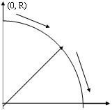
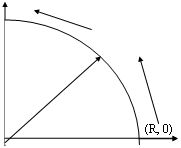
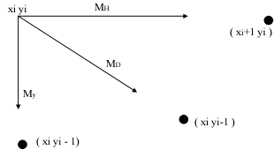
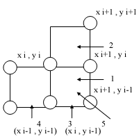

| Алгоритм Брезенхема для генерации окружности |
|
В растр нужно раскладывать не только линейные но и другие, более сложные функции: эллипсы, гиперболы, сплайны, окружности, произвольные кривые (Ву и Рокне). Наибольшее внимание уделено окружности. Один из наиболее эффективных и простых для понимания алгоритмов генерации окружности принадлежит Брезенхему. Для начала заметим, что имеет смысл сгенерировать 1/8 часть окружности. Остальные ее части могут быть получены последовательными преобразованиями (отражениями) (Рис. 34).  Рис. 34 Если сгенерирован один октант от 00 до 450 против часовой стрелки, то второй октант можно получить зеркальными отражением относительно прямой y=x , что дает в совокупности один квадрант. Первый квадрант отражается относительно прямой x=0 для получения соответствующей части окружности во втором квадранте. Верхняя полуокружность отражается относительно прямой y=0 для завершения построения. Для вывода алгоритма рассмотрим первую четверть окружности с центром в начале координат. Заметим, что если работа алгоритма начинается в точке x=0 и y=R, то при генерации окружности по часовой стрелке в первом квадранте y является монотонно убывающей функцией аргумента x (Рис.35).  Рис. 35 Аналогично, если исходной точкой является y=0 и x=R , то при генерации окружности против часовой стрелки x будет монотонно убывающей функцией аргумента y (Рис. 36).  Рис. 36 В нашем случае выбирается генерация по часовой стрелке сначала в точке x=0 и y=R. Предполагается, что центр окружности и начальная точка находятся тоже в точке растра. Для любой заданной точки на окружности при генерации по часовой стрелке существует только три возможности выбрать следующий пиксел, наилучшим образом приближающей окружность (Рис. 37):
 Рис. 37 Эти направления обозначены соответственно mH , mD , mV. Алгоритм выбирает пиксел, для которого минимален квадрат расстояния между одним из этих пикселов и окружностью. То есть, min из mH = ½(
x i + 1 )2+( y i)2-
R2½; Вычисление можно упростить, если заметить , что в окрестностях точки растра. ( x i , y i возможны только 5 типов пересечения окружности и сетки растра (Рис.38).  Рис. 38 Разность между квадратами расстояний от центра окружности до диагонального пиксела (xi+1 , y i-1) и от центра до точки на окружности равна: Как и в алгоритме Брезенхема для отрезка, для выбора соответствующего пиксела желательно использовать только знак ошибки, а не ее величину. Сначала рассмотрим горизонтальный шаг mH к пикселу ( x i+1, y i ). Обозначим это первое
положение пиксела как (i+1), тогда координаты
нового пиксела и значение xi+1 = x i +1 yi+1 = y i Аналогично, координаты нового пиксела и значение
x i+1 = x i +1 y i+1 = y i -1 То же самое для шага mV к (x i , y i -1) x i+1 = x i y i+1 = y i -1 При Рассмотрим сначала случай 1 и проверим разность квадратов расстояний от окружности до пикселов в горизонтальном и диагональном направлениях. d=½( x i+1)2+( yi)2- R2½-½( x i+1)2+ ( yi - 1)2- R2½ При d<0 расстояние от окружности до диагонального пиксела (mD) больше , чем до горизонтального (mH). Напротив , если d >0 , расстояние до горизонтального пиксела (mH) больше. Таким образом при d £0 выбираем mH в ( i+1,y i ) d >0 выбираем mD в ( i+1,y i -1) При d =0 , когда расстояния до обоих пикселов одинаковы от окружности выбираем горизонтальный шаг. Количество вычислений необходимых для оценки величины d можно сократить , если заметить , что в случае 1 ( x i+1)2+( yi)2- R2 ³ 0 ( x i+1)2+ ( yi - 1)2- R2 < 0 Т.к. горизонтальный пиксел (x i+1,y i -1) всегда лежит внутри окружности , а горизонтальный (x i+1,y i ) вне ее. Таким образом d можно вычислить по формуле d=( x i+1)2+(yi)2- R2 +(x i+1)2+ ( yi - 1)2- R2 Дополним до полного квадрата член (yi)2 с помощью добавления и вычитания -2y i+1+ 1Þ d=2[( x i+1)2+( yi-1)2- R2] +2yi - 1 в квадратных скобках по определению стоит d=(
Рассмотрим случай 2. *Случай 2 Из рисунка видно , что необходимо выбрать горизонтальный пиксел (x i+1,y i ) т.к. y является монотонно убывающей функцией. Проверка компонент d показывает , что ( x i+1) + ( yi)2- R2 < 0 ( x i+1) + ( yi - 1)2- R2 < 0 Поскольку в случае 2 горизонтальный ( x i+1,y i ) и диагональный (x i+1,y i -1) лежат внутри окружности. Следовательно d < 0 и при использовании того же самого критерия , что и в случае 1 , выбирается пиксел ( x i+1,y i ) . Если Аналогично разбору предыдущего случая критерий выбора можно получить , рассматривая сначала случай 3 и проверяя разность между квадратами расстояний от окружности до диагонального mD и вертикального mV пикселов точнее. d¢=½(
x i + 1 )2+(
y i - 1)2- R2½
-½(
x i )2+( y i - 1)2- R2½ при d¢£ 0 выбираем mD в ( x i + 1 , y i - 1) при d¢> 0 выбираем mV в ( i , y i - 1). здесь в случае d¢= 0 т.е. когда расстояния равны , выбран диагональный шаг. Проверка компонент d¢ показывает , что ( x i+1) 2 + ( yi - 1)2- R2 ³ 0 ( x i) 2 + ( yi - 1)2- R2 < 0 Поскольку для случая 3 диагональный пиксел ( x i + 1, y i - 1) находится вне окружности , тогда как вертикальный лежит внутри ее. Это позволяет записать d¢ в виде d¢=( x i + 1 )2+( y i - 1)2- R2 +( x i )2+( y i - 1)2- R2 Дополнение до полного квадрата члена( x i )2 с помощью добавления и вычитания 2 x i + 1 дает d¢=2[( x i + 1 )2+( y i - 1)2- R2 ] - 2x i - 1 Использование определения d¢=2( Теперь рассматривая 4 случай , заметим что следует выбрать вертикальный пиксел ( x i , y i - 1 ) т. к. y является монотонно убывающей функцией при x. Проверка компонента d¢ для случая 4 показывает , что : ( x i+1) 2 + ( yi - 1)2- R2 >0 ( x i) 2 + ( yi - 1)2- R2 >0 Поскольку оба пиксела находится вне окружности , следовательно d¢>0 и при использовании критерия полученного для случая 3 , происходит верный выбор mV . Осталось проверить только случай 5. Который встречается , когда диагональный пиксел ( i + 1, y i - 1) лежит на окружности , т.е. Проверка компонента d показывает : ( x i+1) 2 + ( yi )2- R2 >0 ( x i+1) 2 + ( yi - 1)2- R2 =0 Þ d>0 и выбирается диагональный пиксел (x i + 1, y i - 1). Аналогичным образом оцениваем компоненты d¢ . ( x i+1) 2 + ( yi - 1)2- R2 =0 ( x i) 2 + ( yi - 1)2- R2 <0 и d¢< 0 , что является условием выбора правильного диагонального шага к ( x i + 1, y i - 1). Т.о. Случай Подведем итог полученных результатов d £0 выбираем пиксел ( x i + 1, y i ) ® mH d >0® ( x i + 1, y i - 1 ) ® mD d¢ £0 ( x i + 1, y i- 1 ) ® mD d¢ >0® ( x i , y i - 1 ) ® mV Легко разработать простые реккурентные соотношения для реализации пошагового алгоритма. Сначала рассмотрим горизонтальный шаг mH
к пикселу ( x i +
1, y i .
Обозначим это новое положение пиксела как (i+1).
Тогда координаты нового пиксела и значение x i+1 = x i + 1; y i+1 = y i; Аналогично, координаты нового пиксела
и значение x i+1 = x i+1 ; y i+1 = y i -1; То же самое для шага mV к ( x i , y i-1 ) x i+1 = x i ; y i+1 = y i -1; |